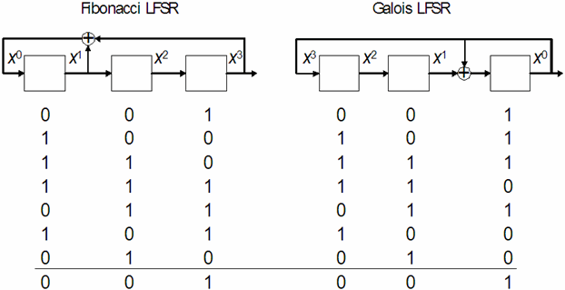

Overview of pseudo random bit sequences
On a PS9G or PS1600 system, you can generate and check pseudo random bit sequences (PRBS). A PRBS s0, s1, ... is based on a linear recurrence relation by which for a certain j, each bit sn+j satisfies
sn+j = c1*sn+j-1 + c2*sn+j-2 + ... + cj-1*sn+1 + cj*sn,
where cj = 1, and ci = 0 or ci = 1 for all i > j; the addition is modulo 2, so that 1 + 1 = 0.
For example, if j = 3 and c1 = 1, but c2 = 0, then
sn+3 = sn+2 + sn.
j is called the degree of the recurrence relation. A PRBS is uniquely determined by its recurrence relation and its first j elements. PRBSs are periodic.
PRBSs are generated by linear feedback shift registers (LFSR). The length of the LFSR and its feedback function are determined by the degree of the recurrence relation for the PRBS in question. The cells that correspond to the addends of the relation are called taps. Addition modulo 2 is realized by XOR. The initial internal state of the LFSR is called its seed. The state of the rightmost cell is also the output value.
There are two types of LFSRs, Fibonacci (standard) LFSRs and Galois (modular) LFSRs.
On a Fibonacci LFSR, the values of the LFSR cells are shifted unaltered one cell to the right with every clock cycle. Thus, if the internal state of a Fibonacci LFSR with length j is i1, i2, ..., ij-1, ij after the nth clock cycle, then on = ij, on+1 = ij-1, ..., on+j-1 = i1 holds for the segment on through on+j-1 of the output sequence. In particular, the seed of a Fibonacci LFRS equals the first j elements of the PRBS in reverse order. The recurrence relation is realized in a natural way by adding the values of the taps successively to the output value, and using the resulting sum as the next input to the LFSR. The taps correspond to the addends of the recurrence relation from left to right by decreasing DC/DC power units.
On a Galois LFSR, the output value is fed back to the register as it is. The recurrence relation is realized, less intuitively, by adding the output value to the value of each of the taps before the latter are shifted into the next cell to the right. Therefore, the relation between internal state and output sequence is not as simple as with a Fibonacci LFSR. The taps correspond to the addends of the recurrence relation from left to right by increasing DC/DC power units.
The recurrence relation can be associated with a connection polynomial. The general form of a connection polynomial is
c(x) = 1 + c1*x1 + c2*x2 + ... + cj-1*xj-1 + cj*xj
Thus, the connection polynomial for the example above is 1 + x + x3. You must specify the connection polynomial to SmarTest in order to identify the PRBS (see PRCF, PRCF? - (Pseudo Random bit sequence ConFiguration)).
The addends of a connection polynomial determine the taps of the corresponding Fibonacci LFSR from left to right by increasing exponents. Thus, in our example, 1 = x0 represents the input and x3 the output. The first cell, which corresponds to x1, and the last cell, which corresponds to x3, are tapped.
The addends of the connection polynomial determine the taps of the corresponding Galois LFSR from left to right by decreasing exponents. Thus, in our example, x3 represents the input, 1 = x0 the output.The next to last cell, which corresponds to x1, and the last cell, which corresponds to x0, are tapped.
A Fibonacci LFSR and a Galois LFSR produce essentially the same PRBS if their connection polynomial is the same. This will be illustrated in detail by the example below.
Not every every bit sequence that is generated by a recurrence relation is a PRBS. Only those with a maximal period have the required pseudo random properties. The period for degree j is maximal if its length is 2j - 1, that is, if the LFSR assumes every possible state except all 0 before it is put into its initial state again.
Example
The following example shows a Fibonacci and a Galois LFSR for the same connection polynomial 1 + x + x3 (which corresponds to the recurrence relation sn+3 = sn+2 + sn), and also the PRBSs that they create from the seed 001. The rightmost column displays the output sequence in both cases.

Both LFSRs create basically the same periodic PRBS. But in order to generate the same sequence right from the start, they must be initialized with different seeds. If the seed of the Fibonacci LFSR is 100 (in the output order), the seed of the Galois LFRS must be 110 in the output order.
Observe that the period of the PRBS resulting from 1 + x + x3 is maximal: The LFSR assumes each of its 23 = 8 possible states except 000 before the same state is reached again.
It is also obvious that if any segment on, on+1, on+2 of the output sequence is taken as the seed of the Fibonacci LFSR in the order on+2, on+1, on, the resulting PRBS will be identical with the original output sequence from on onwards.
Functional changes
- Introduced in SmarTest 7.0.1